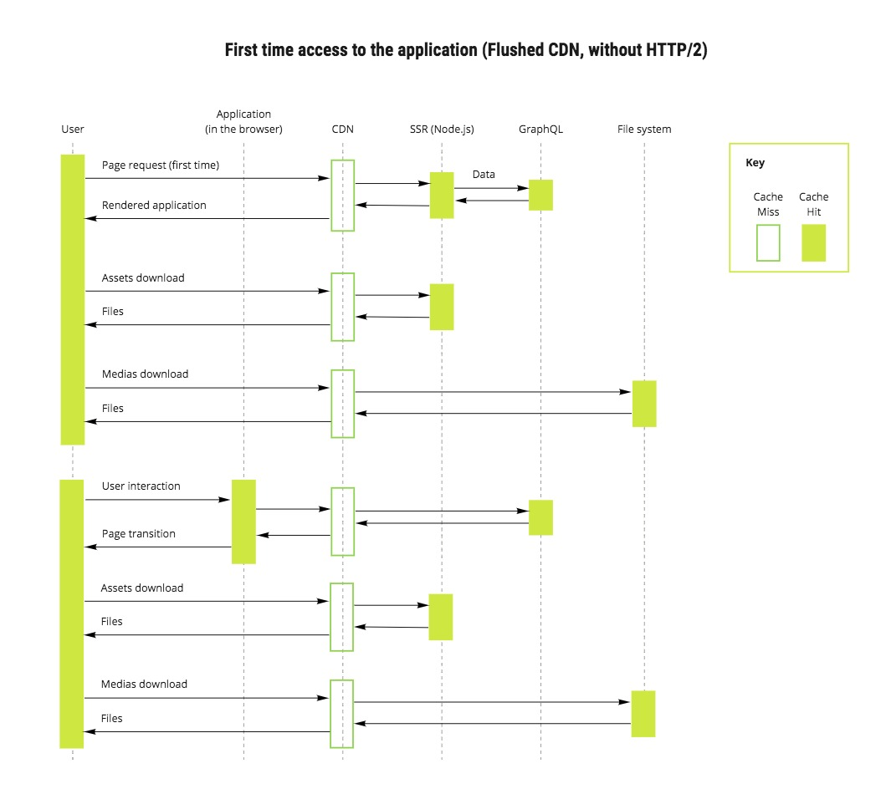

Introdução

É um framework para aplicativos react que faz renderização do lado do servidor por padrão, entre muitas outras otimizações de desempenho como:
- Divisão de código automática para cargas de página mais rápidas.
- Ambiente de desenvolvimento baseado em Webpack que ofereça suporte a Hot Module Replacement (HMR)
- Capaz de implementar com o Express ou qualquer outro servidor HTTP Node.js
- Customizável com suas próprias configurações Babel e Webpack
Hoje todos estão familiarizados com o conceito de fadiga de JavaScript. Criar um aplicativo da web com JavaScript geralmente é difícil com todos os pacotes e opções que temos. React, webpack, Redux, React-router e muito mais bibliotecas e ferramentas são frequentemente usadas e exigem esforço para aprender.
Com o Next.js, habilitamos os desenvolvedores a criar aplicativos da web JavaScript com fluxo de trabalho mais direto. Basta criar alguns arquivos que exportam componentes do React e implantar seu aplicativo.
Fluxograma de uso prático:

Como funciona o Next.js ?
Criamos nosso projeto e inicializamos um pacote package.json:
$ mkdir nextjs
$ cd nextjs
$ npm init -y
Em seguida, instalamos Next.js e as dependências do React e criamos um diretório de páginas:
$ npm install --save next react react-dom
$ mkdir pages
pages - Next.js estende essa estrutura introduzindo um subdiretório de páginas onde seus componentes de nível superior vivem. Com isso ele faz o mapeamento das rotas.
No diretório pages, criamos um arquivo em pages/index.js com o seguinte conteúdo:
import React from 'react'
import Link from 'next/link'
import { setTimeout } from 'timers';
class Home extends React.Component {
static getInitialProps(ctx) {
return new Promise((resolve, reject) => {
setTimeout(() => {
resolve({ name: 'Taller' })
}, 500)
})
}
render() {
return (
<h1>{this.props.name}</h1>
)
}
}
export default Home
getInitialProps - É uma ótima função para o nível superior dos componentes (page). Ele dá acesso a uma série de propriedades, como a solicitação e objetos de resposta e informações de URL, como o nome do caminho.
Nós também criamos um arquivo chamado pages/about.js contendo este código:
import React from 'react'
const About = () => (
<h2>About poc</h2>
)
export default About
Adicionamos um script para o servidor de desenvolvimento ao package.json:
"scripts": {
"dev": "next",
"build": "next build",
"start": "next start"
}
Nós executamos esse script para iniciar o servidor de desenvolvimento:
$ npm run dev